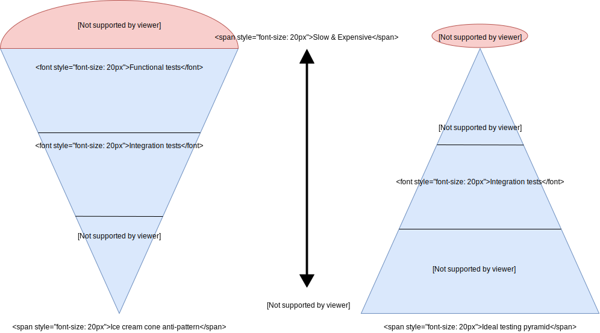

Testing¶
Testing types
- Unit tests work on a single component of the application.
- Integration tests mock of stub out external dependencies but tests several components of the application at once.
- Functional tests exercise the entire stack of the application which could include other applications, message brokers, databases, etc.
Testing pyramid
The testing pyramid is a way of thinking about different kinds of automated tests should be used to create a balanced portfolio. The essential point is that you should have many more unit tests than high level functional tests. The tests on top of the pyramid have higher cost of writing and maintaining. Execution time and computer resources consuming decrease from top to bottom.
Test Doubles
Test Double as the generic term for any kind of pretend object used in place of a real object for testing purposes. There are several types of those:
- Dummy objects are passed around but never actually used. Usually they are just used to fill parameter lists.
- Fake objects replace the actual code by implementing the same interface without interacting with other objects e.g. an in memory database.
- Stubs are written to behave in particular way e.g. return an error or a good value.
- Spies record some information based on how they were called to be inspected later e.g. an email service that records how many messages it was sent.
- Mocks are told how they expect to be called and then can be verified later.
Running strategy
Unit and integration tests run before the pipeline because they are cheap and fast. For instance, they can be triggered on each new pull request. Functional tests are slow and executed after application deployment on staging environment but before deployment to production.